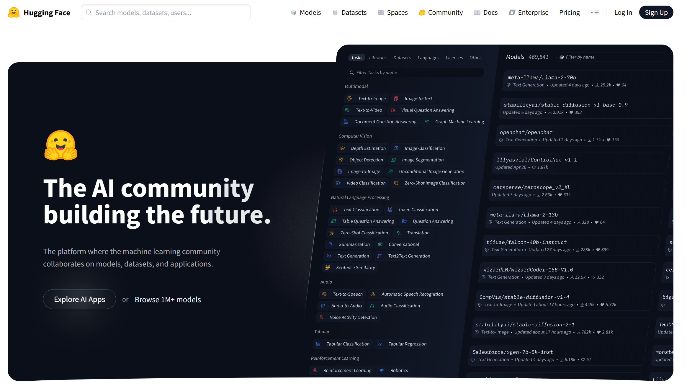
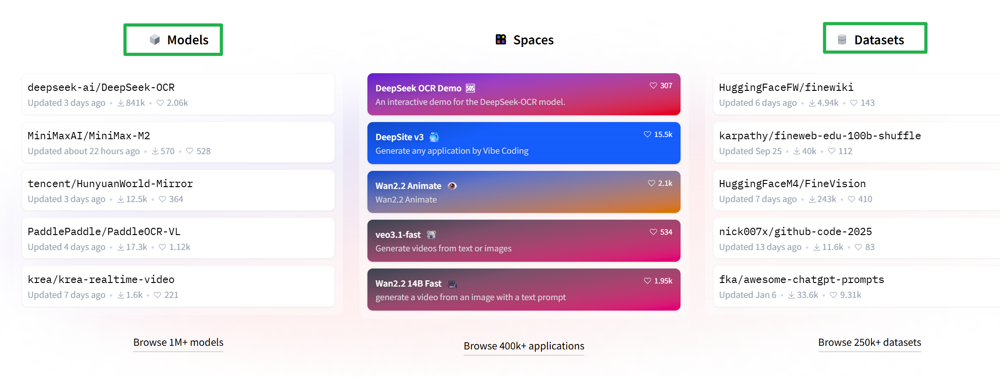
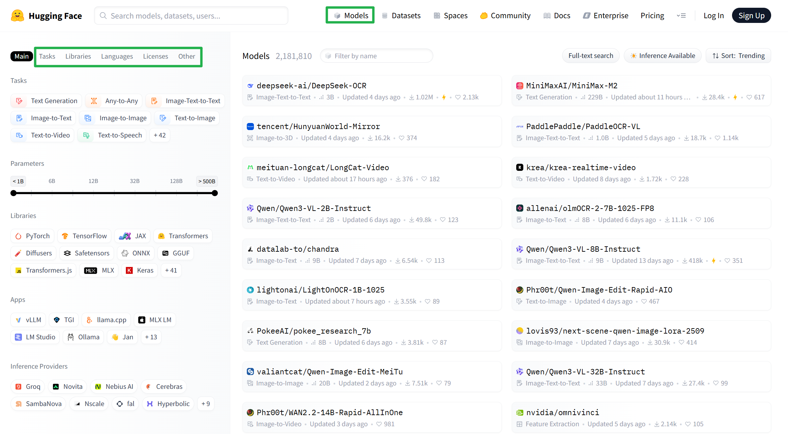
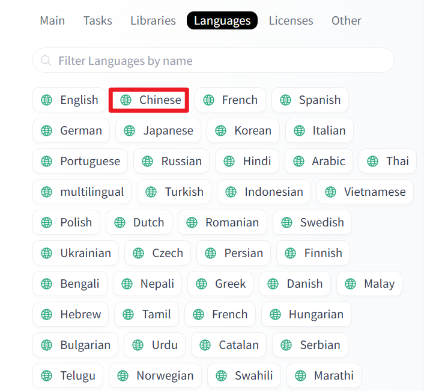
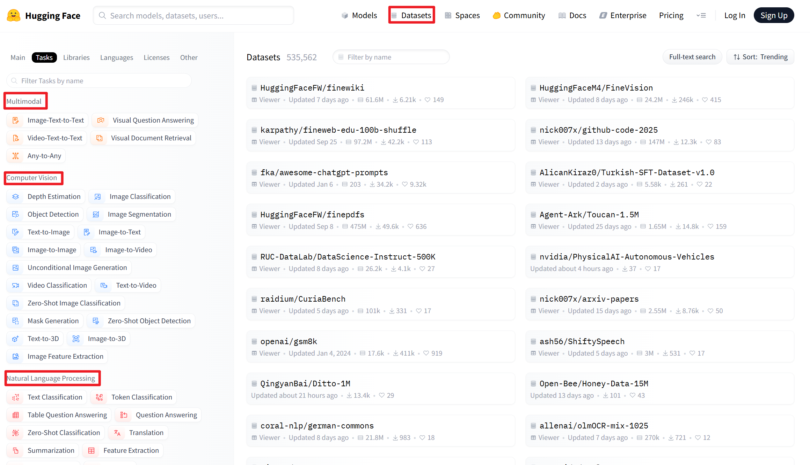
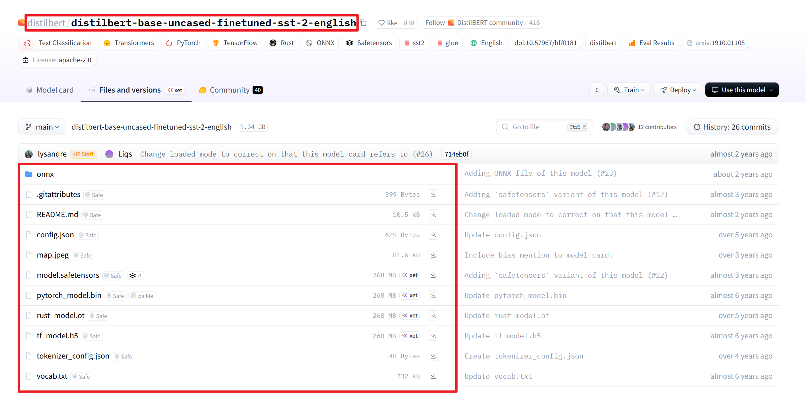
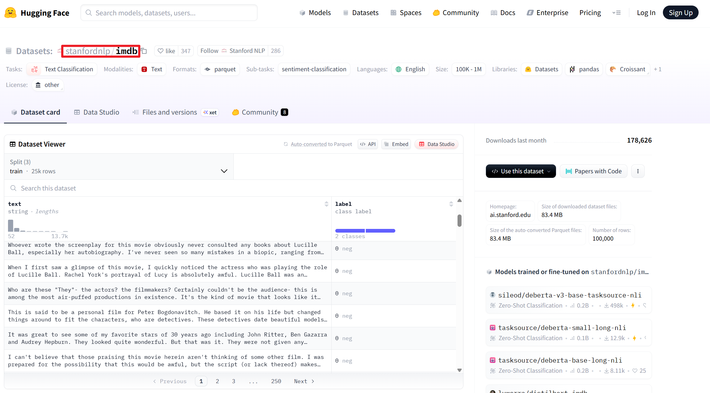
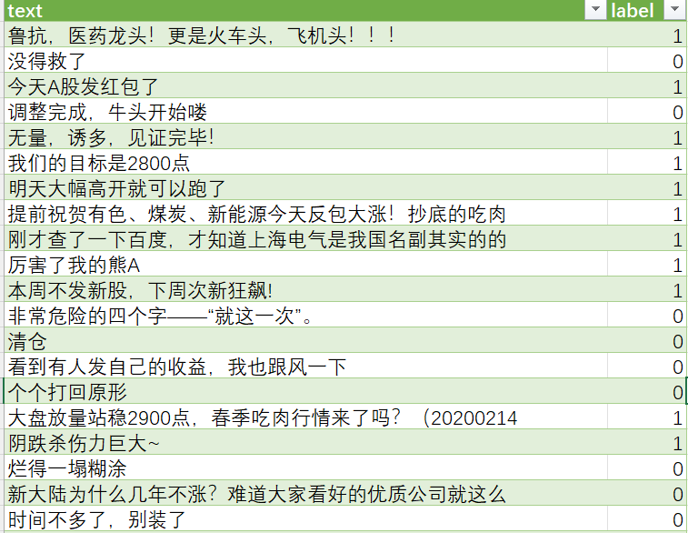

2.1 HuggingFace¶
Hugging Face总部位于纽约，最初是一家专注于自然语言处理、人工智能和分布式系统的创业公司。他们所提供的聊天机器人技术一直颇受欢迎，但更出名的是他们在NLP开源社区上的贡献。Hugging Face一直致力于自然语言处理NLP技术的平民化，希望每个人都能用上最先进(SOTA, state-of-the-art)的NLP技术，而非困窘于训练资源的匮乏。同时Hugging Face专注于NLP技术，拥有大型的开源社区。
Hugging Face 的访问地址为：https://huggingface.co/ :

Hugging Face是一个协作平台，其中托管了大量的用于机器学习的开源模型和数据集，你可以将其视为 ML 的 Github。它让你可以轻松地找到、学习开源社区中有用的 ML 资产并与之交互，从而促进共享和协作。
我们能从Hugginface中获取各种 预训练模型Models , 各种类型的 开源数据集Datasets ,还有 Hugging Face Spaces ，它是 Hugging Face上提供的一项服务，它提供了一个易于使用的 GUI，用于构建和部署 Web 托管的 ML 演示及应用。

-
Models（模型库） ：这是 Hugging Face 最核心、最出名的部分。托管了超过 100万个 开源模型，涵盖了各类任务，如文本分类、图像生成、语音识别、翻译等。
-
Datasets（数据集库） ：没有数据，就没有模型。Datasets 库解决了数据获取和处理的难题。提供了数万个数据集，覆盖了文本、图像、音频等多种类型。
-
Spaces ：Hugging Face 的 “应用演示和部署” 平台。快速为你的机器学习模型构建一个交互式的 Web 演示界面，并直接托管在 Hugging Face 上。分为免费的公共 Space 和付费的私有 Space，满足不同需求。
另外，Hugging Face 开发并维护了一系列极其优秀的开源Python库，它们是整个生态的技术基础：
transformers：提供了数千个预训练模型的统一API。datasets：访问和处理数据集提供了简单高效的接口。accelerate：在不同硬件（CPU、单GPU、多GPU、TPU）上的模型训练和推理代码。
其中 Transformers 提供了数以千计的预训练 transformer 模型，可广泛用于自然语言处理 (NLP) 、计算机视觉、音频等各种任务。它通过对底层 ML 框架 (如 PyTorch、TensorFlow 和 JAX) 进行抽象，简化了 transformer 模型的实现，从而大大降低了 transformer 模型训练或部署的复杂性。
1.Hugging Face¶
1.1 Models¶
Models 库的核心是存储了成千上万个使用不同框架（如 PyTorch, TensorFlow, JAX, Flax 等）训练的机器学习模型。其内容远不止自然语言处理，涵盖了 AI 的多个领域。

Hugging Face 为模型打上了清晰的任务标签，方便用户查找：
自然语言处理：
text-classification：文本分类（如情感分析）token-classification：词元分类（如命名实体识别）question-answering：问答summarization：文本摘要text-generation：文本生成translation：机器翻译fill-mask：掩码填充（BERT 的经典任务）conversational：对话聊天
计算机视觉：
image-classification：图像分类object-detection：目标检测image-segmentation：图像分割image-to-text：图像描述unconditional-image-generation：无条件图像生成
音频：
audio-classification：音频分类automatic-speech-recognition：自动语音识别text-to-speech：文本到语音audio-to-audio：音频到音频（如语音增强）
多模态：
feature-extraction：特征提取（为文本、图像等生成向量）text-to-image：文生图visual-question-answering：视觉问答document-question-answering：文档问答
另外也可以按照语言进行查找：

1.2 Datasets¶
Datasets 是一个为机器学习社区提供的开源数据集库。它解决了机器学习项目中一个至关重要且通常很棘手的环节：数据获取与数据预处理。

Datasets 是一个庞大的数据仓库，按照数据类型我们可以将其划分为：
| 描述 | 经典示例 | |
|---|---|---|
| 文本 | 纯文本、对话、代码等，是数量最多的类型。 | - IMDB：电影评论情感分析 - SQuAD：阅读理解问答 - WikiText：语言建模 |
| 图像 | 单张图片或带标注的图片集合。 | - CIFAR-10/100：物体图像分类 - ImageNet：大规模图像识别 - COCO：目标检测与图像描述 |
| 音频 | 语音录音、音乐、环境音等。 | - LibriSpeech：英语语音识别 - Common Voice：多语言开源语音数据集 - GTZAN：音乐流派分类 |
| 多模态 | 同时包含多种类型的数据（如文本+图像）。 | - LAION：图文对数据集（用于文生图模型训练） - VQA：视觉问答数据集 |
2.开源库¶
2.1 transformers¶
transformers 是一个由 Hugging Face 开发的开源 Python 库，它提供了数以万计的 预训练模型 ，主要用于自然语言处理，同时也覆盖了计算机视觉、音频等多模态任务。核心作用是：让开发者和研究人员能够用几行代码就轻松下载、使用和微调最先进的预训练模型。
安装方法非常简单，可以通过 pip 完成，如下所示：
# 安装 transformers 库
pip install transformers
# 网速慢，可以使用国内源
pip install transformers -i https://mirrors.aliyun.com/pypi/simple/
安装完成后，我们就可以使用transformers完成相应的任务了.
transformers中的主要组件包括：
| 组件名称 | 主要功能 | 输入 | 输出 | 应用场景 |
|---|---|---|---|---|
| AutoTokenizer 自动分词器 |
文本预处理 · 分词 · 编码 · 添加特殊标记 |
原始文本 | Token IDs Attention Mask |
所有NLP任务的预处理 |
| AutoModel 自动模型 |
基础模型架构 · 特征提取 · 隐藏状态输出 |
Token IDs | 原始隐藏状态 | 特征提取、自定义任务开发 |
| AutoModelForSequenceClassification 分类模型 |
文本分类 · 情感分析 · 主题分类 |
Token IDs | 分类概率分布 | 情感分析、垃圾邮件检测 |
| AutoModelForQuestionAnswering 问答模型 |
机器问答 · 答案定位 · 跨度提取 |
问题+上下文 | 答案起止位置 | 智能客服、阅读理解 |
| AutoModelForTokenClassification 序列标注模型 |
序列标注 · 实体识别 · 词性标注 |
Token IDs | 每个token的标签 | 命名实体识别、词性标注 |
| TrainingArguments 训练参数 |
训练配置 · 超参数设置 · 策略配置 |
训练配置选项 | 参数对象 | 模型训练参数管理 |
| Trainer 训练器 |
模型训练 · 自动训练循环 · 评估保存 |
模型+数据+参数 | 训练好的模型 | 模型微调、迁移学习 |
| pipeline 推理管道 |
端到端推理 · 一键式解决方案 · 自动预处理后处理 |
原始输入 | 结构化结果 | 快速原型、生产部署 |
工作流程：选模型 → 加载分词器 → 处理数据 → 推理/训练
推理：用 pipeline（简单，快速推理）或 AutoTokenizer+AutoModel（灵活，自定义推理）
训练：用 Trainer+TrainingArguments 组合
不同任务：选择对应的 AutoModelForXXX 模型
2.1.1 pipeline管道¶
pipeline是一种高级API，封装了模型的加载、预处理、推理和后处理过程，用户只需几行代码即可完成复杂的任务。如果你需要快速完成一个任务，或者对模型细节不感兴趣，管道方式是最佳选择。
文本分类任务 ：
# 使用 pipeline 创建一个文本分类任务的情感分析器
# - task: 任务类型为"text-classification"（文本分类）
# - model: 指定使用在SST-2数据集上微调的DistilBERT模型
# "distilbert-base-uncased-finetuned-sst-2-english" 是一个轻量级的BERT变体，
# 在斯坦福情感树库(SST-2)的英文数据集上进行了微调，专门用于情感分析
# - framework: 指定使用PyTorch作为深度学习框架（"pt"代表PyTorch）
# 直接在官网缓存
classifier = pipeline(
task="text-classification",
model="distilbert-base-uncased-finetuned-sst-2-english",
framework="pt"
)
=
# 本地加载模型权重
classifier = pipeline(task="text-classification",
model=r"C:\Users\Abela\Desktop\大模型微调\code\AE\weights\models--distilbert-base-uncased-finetuned-sst-2-english",
framework="pt")
# 对输入文本进行文本分类（情感分析）
# 这个模型是一个二分类模型，会将文本分类为正面(POSITIVE)或负面(NEGATIVE)情感
input_text = "I love this movie! The acting is amazing."
result = classifier(input_text)
# 输出情感分析结果
# 结果格式为列表，包含一个或多个字典，每个字典包含：
# - 'label': 分类标签，如 'POSITIVE'（正面）或 'NEGATIVE'（负面）
# - 'score': 模型置信度分数，范围0-1，值越高表示模型越确定
print(result) # 示例输出: [{'label': 'POSITIVE', 'score': 0.9998}]
输出结果为：
[{'label': 'POSITIVE', 'score': 0.9998817443847656}]
pipeline函数可以自动从官网下载预训练模型，也可以加载本地的预训练模型
transformer库中预训练模型查找和下载方式：

文本生成任务 ：
# 使用文本生成模型
# 指定使用更大的GPT-2模型变体
# generator = pipeline(
# "text-generation",
# model="gpt2-medium" # 使用GPT-2的中等规模版本（3.4亿参数）
# )
generator = pipeline(
"text-generation",
model=r"C:\Users\Abela\Desktop\大模型微调\code\AE\weights\gpt2-medium" # 使用GPT-2的中等规模版本（3.4亿参数）
)
# 调用创建好的生成器，传入提示文本和生成参数
# - text_inputs: 提示文本，模型会基于这个开头继续生成后续内容
result = generator(
text_inputs="The future of AI is", # 提示文本：AI的未来是...
)
# 输出生成的完整文本
# result 是一个列表，包含所有生成的序列（这里只有一个）
# 每个序列是一个字典，包含 'generated_text' 键，值为完整的生成文本
# result[0] 获取第一个生成结果
# ['generated_text'] 获取该结果中的生成文本内容
print(result[0]['generated_text'])
输出结果为：
The future of AI is not a bright one.
And it is too early to say how this will all play out, but for now, the company is going to be doing more with its limited resources.
For now, they're making a few games around AI, and one of those is The Last of Us. It's a huge franchise, being developed by Naughty Dog and published by Naughty Dog and Sony.
The Last of Us is an action game, with a great story, great combat, great weapons and great characters. It's incredibly well-received. When Naughty Dog signed to Sony, they mentioned that The Last of Us was their first game in a decade to not be developed for PS3 and Xbox 360.
So now, in a strange twist of fate, Naughty Dog is developing a game in a new generation of consoles, with a new team at Naughty Dog. It has been revealed that the game will be called The Last of Us: Remastered.
The studio is calling it the next generation of Naughty Dog games, and I'm sure many people will be excited to hear this.
It's going to be called The Last of Us: Remastered and it will come out for PS3 and Xbox 360.
2.1.2 AutoModel自动模型¶
自动模型方式（AutoModel） 是一种中级API，允许用户更灵活地加载模型和分词器，并手动控制推理过程。如果你需要定制化模型、优化性能或进行更复杂的实验，自动模型方式更适合。
文本分类任务 ：
from transformers import AutoTokenizer, AutoModelForSequenceClassification
import torch
import torch.nn.functional as F
# 方式1：从HuggingFace官网缓存加载（取消注释即可使用）
# model_path = "distilbert-base-uncased-finetuned-sst-2-english"
# 方式2：从本地路径加载模型权重
model_path = r"C:\Users\Abela\Desktop\大模型微调\code\AE\weights\models--distilbert-base-uncased-finetuned-sst-2-english"
# 加载分词器（tokenizer）
# 负责将原始文本转换为模型可以理解的token IDs
tokenizer = AutoTokenizer.from_pretrained(model_path)
# 加载序列分类模型
# AutoModelForSequenceClassification 专门用于文本分类任务
# 在基础模型上添加了分类头，输出分类logits
model = AutoModelForSequenceClassification.from_pretrained(model_path)
# 设置模型为评估模式
model.eval()
# 准备输入文本
input_text = "I love this movie! The acting is amazing."
# 使用分词器对文本进行预处理
# - return_tensors="pt": 返回PyTorch张量格式
inputs = tokenizer(
input_text,
return_tensors="pt"
)
# 模型推理（前向传播）
# 使用torch.no_grad()上下文管理器，避免计算梯度，节省内存和计算资源
with torch.no_grad():
# 将输入数据传递给模型
# **inputs 将字典解包，相当于 input_ids=inputs['input_ids'], attention_mask=inputs['attention_mask']
outputs = model(**inputs)
# 获取模型输出的logits
# logits的形状为 (batch_size, num_labels)，这里batch_size=1, num_labels=2
logits = outputs.logits
# 使用softmax将logits转换为概率分布
# dim=-1 表示在最后一个维度（分类维度）上进行softmax
probabilities = torch.softmax(logits, dim=-1)
# 获取预测的类别ID（概率最大的类别）
predicted_class_id = torch.argmax(probabilities, dim=-1).item()
# 获取最大概率值（置信度）
confidence = probabilities[0][predicted_class_id].item()
# 从模型配置中获取类别ID到标签名称的映射
# 这个模型通常有两个标签：0->NEGATIVE, 1->POSITIVE
predicted_label = model.config.id2label[predicted_class_id]
# 构建与pipeline相同格式的输出结果
result = [{
'label': predicted_label, # 预测的标签，如 'POSITIVE' 或 'NEGATIVE'
'score': confidence # 置信度分数，0-1之间
}]
# 输出结果
print(result) # 输出: [{'label': 'POSITIVE', 'score': 0.9998}]
输出结果为：
[{'label': 'POSITIVE', 'score': 0.9998817443847656}]
文本生成任务 ：
from transformers import AutoTokenizer, AutoModelForCausalLM
import torch
# 加载GPT-2模型的tokenizer和模型
# AutoTokenizer: 自动加载分词器
# AutoModelForCausalLM: 专门用于因果语言建模（文本生成）的模型类
tokenizer = AutoTokenizer.from_pretrained(r"C:\02-code\02-AE\weights\gpt2-medium")
model = AutoModelForCausalLM.from_pretrained(r"C:\02-code\02-AE\weights\gpt2-medium")
# 设置模型为评估模式，关闭dropout等训练时的随机性
model.eval()
# 对输入文本进行编码和预处理
# 使用分词器将文本转换为模型可理解的token IDs
# return_tensors="pt" 表示返回PyTorch张量
input_text = "The future of AI is"
inputs = tokenizer(input_text, return_tensors="pt")
# 使用模型进行文本生成
# 在torch.no_grad()上下文中运行，减少内存占用并加速推理
with torch.no_grad():
# 调用模型的generate方法进行文本生成
generated_ids = model.generate(
**inputs
)
# 将生成的token IDs解码为可读文本
generated_text = tokenizer.decode(generated_ids[0])
# 输出生成的完整文本
print(generated_text)
输出结果为：
The future of AI is going to be about building more intelligent machines, not more human computers. If we don't have AI, I don't see any reason to think that AI will be a replacement for people."
Robots are not the only technology that is coming to be supplanted by AI. Some are also going to be replaced by new forms of intelligence that can be built on top of us. We are going to be replaced by artificial intelligence, or AI,
2.2 datasets¶
Datasets 是一个专门为机器学习设计的数据集管理库，它提供了简单、高效的方式来访问和处理数据集。
安装方法如下：
# 直接安装
pip install datasets
# 使用国内源
pip install datasets -i https://mirrors.aliyun.com/pypi/simple/
2.2.1 加载huggingface中数据¶
IMDB（Internet Movie Database）数据集是一个大型电影评论数据集，主要用于情感分析的二分类任务。共有50,000 条电影评论，由斯坦福大学创建。

使用datasets加载的方法是：
from datasets import load_dataset
dataset = load_dataset("imdb")
print(dataset)
输出结果为：
DatasetDict({
train: Dataset({
features: ['text', 'label'],
num_rows: 25000
})
test: Dataset({
features: ['text', 'label'],
num_rows: 25000
})
unsupervised: Dataset({
features: ['text', 'label'],
num_rows: 50000
})
})
2.2.2 加载本地数据¶
利用一个非常典型的中文财经评论情感分析数据集，该数据数据来源东方财富网股吧评论，共有1700条带标注的财经评论，CSV格式，包含text和label两列，其中：
# 标签统计
正面评论 (label=1): 约 60-65%
负面评论 (label=0): 约 35-40%
部分内容如下：

我们使用datasets加载该数据集.
# 使用 load_dataset 从本地CSV加载
dataset = load_dataset('csv', data_files=r'C:\Users\Abela\Desktop\大模型微调\code\AE\data\财经评论.csv')
# 查看数据集结构
print(f"数据集: {dataset}")
print(f"训练集样本数: {len(dataset['train'])}")
输出结果为：
数据集: DatasetDict({
train: Dataset({
features: ['text', 'label'],
num_rows: 1772
})
})
训练集样本数: 1772
3.总结¶
1.HuggingFace 概述 ：专注于自然语言处理（NLP）和人工智能的开源社区与平台。推动先进NLP技术的普及，让更多人能使用SOTA模型。
- Models：托管超100万个开源模型，涵盖NLP、CV、音频等多领域任务。
- Datasets：提供数万个开源数据集，支持文本、图像、音频等多模态数据。
- Spaces：提供Web托管的ML应用演示与部署服务。
2. transformers ：提供统一的API，支持数千个预训练模型的下载、使用与微调。
- AutoTokenizer：文本预处理（分词、编码）。
- AutoModelForXXX：针对不同任务的模型（如分类、生成、问答）。
- TrainingArguments & Trainer：训练配置与自动化训练。
- pipeline：端到端推理工具，简化模型使用。
3. datasets ：高效加载与处理数据集。
- HuggingFace Hub（如IMDB数据集）。
- 本地文件（如CSV格式的财经评论数据集）。